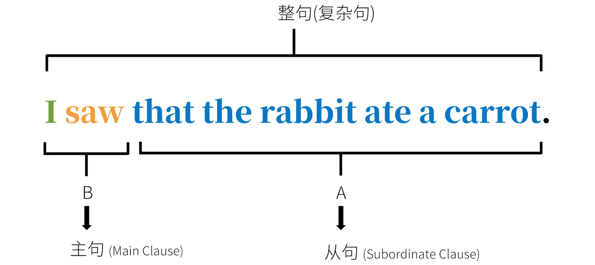
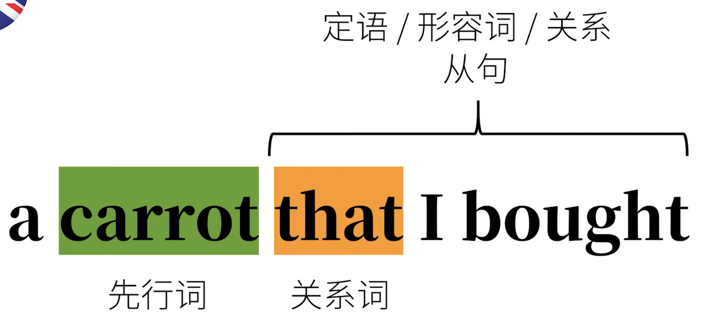

英语从句
英语从句的原理
一个句子 A 可以成为一个整句的某种句子成分——你可以理解为——A 成了整句其余部分 B 的附属，服“从”B，同时也不能独立成句了；而 B 就成为了 A 的“主”人。这就是英语从句的原理。A就是所谓“从句”，B就是所谓“主句”。它们合在一起是一句“复杂句“。

英语的三种句子
- 简单句 Simple Sentences 不能再拆
- 复合句 Compound Sentences 不分主次
- 复杂句 Complex Sentences 主句 + 从句
英语从句的分类
一个从句可以充当句子成分，所以只要把所有句子成分列出来，咱们就知道有哪些从句了。一句话有可能有的句子成分为：主语、宾语、间接宾语、直接宾语、（宾语）补语、（主语）补语（表语）、定语、状语、同位语，除了其中最特殊的句子成分，谓语动词之外，每种句子成分祈使都可以由从句充当。
句子成分/句型
主语+动词 主语从句 主语+动词+宾语 宾语从句 主语+动词+间接宾语+直接宾语 主语+动词+宾语+（宾语）补语 宾语补语从句 主语+动词+（主语）+补语（表语） 主语补语（表语）从句 定语、状语、同位语 定语从句、状语从句、同位语从句
词类
动词 数词 名词 副词 代词 介词 冠词 叹词 形容词 连词
名词从句
主语从句 宾语从句 主语补语（表语）从句 宾语补语从句 同位语从句
形容词从句
定语从句
副词从句
状语从句 - 时间状语从句 - 地点状语从句 - 条件、原因、方式、比较……状语从句
形容词从句
形容词从句的思维方式
在中文里，无论定语是单个形容词也好，又或是一句话充当的，都是放在被修饰的名词/代词之前：
*好吃的* 胡萝卜 *我买来的* 胡萝卜 *我昨天在菜市场向刚从地里回来的乌龟那儿买来的* 胡萝卜
中文构成定语基本上就是“ 形容词/句子 + 的 ”。
但是，英语就不一样了。虽然单个形容词（或者多个形容词，或副词加形容词）作定语也是放在被修饰词之前，如：
a tasty carrot 一根好吃的 胡萝卜
但是如果定语要用一句话来描述时，就无法使用中文里“ 形容词/句子 + 的 ”的结构来实现了。
在英语里，一根 我买来的 胡萝卜要说成： a carrot that I bought
这样的英语定语的思维方式，可以理解为：在被修饰的词之后，添加另一个和它有关系的词，然后再把这个新词放在另一个句子中进行补充说明/逻辑阐述。语法上，这个新词叫”关系词“，它之前的被修饰的词叫”先行词“；这里的”另一个句子“就是”定语从句/形容词从句“；而因为其中包含关系词的缘故，这样的从句也被成为”关系从句“。

快速总结：中英思维方式不同
中文思维：
这兔子在吃一根我买来的胡萝卜
英文思维：
这兔子在吃一根 胡萝卜 （[ 胡萝卜的关系词 ]我买）。
The rabbit is eating a carrot ([ that ] I bought).
再具体一点，中文句子的定语都是”前置“的：
一根 *好吃的* 胡萝卜 一根 *兔子吃了的* 胡萝卜 一个 *是兔子的* 老师 一个 *我昨天看见的* 老师 *兔子吃胡萝卜的* 地方 *兔子吃胡萝卜的* 原因
而对应的英语是：
a *tasty* carrot a carrot *that the rabbit ate* a teacher *who is a rabbit* a teacher *whom I saw yeasterday* the place *where the rabbit ate the carrot* the reason *why the rabbit ate the carrot*
从句做定语都是”后置“的。
形容词从句的构成
关系词
关系代词
关系代词引导的形容词从句
The rabbit is eating a carrot _*that* I bought_. The teacher _*who* ate a carrot_ is a rabbit. The teacher _*whom* I saw yesterday_ is a rabbit. The teacher _*whose* favorite food is carrot_ is a rabbit. The food _*which* the teacher likes_ a carrot.
这些从句中，除去关系代词在开头作引导词，其他词的语序与对应的陈述的语序是一致的。
- 陈述句
I bought *the carrot* *the rabbit* ate a carrot I saw *the teacher* yesterday *the teacher's* favorite food is carrot the teacher likes *the food*
- -> 陈述句语序，含关系代词
先把对应的陈述句中需要替代的词变做相应的关系代词：
I bought *that* *who* ate a carrot I saw *whom* yesterday *whose* favorite food is carrot the teacher likes *which*
- -> 从句
再把关系代词移到开头，就构成了从句
*that* I bought *who* ate a carrot *whom* I saw yesterday *whose* favorite food is carrot *which* the teacher likes
that vs. which
刚才最后一个例句里的关系代词是 which，它代表之前的词 food，这里其实也可以用 that：
The rabbit is eating a carrot *that I bought*. The teacher who ate a carrot is a rabbit. The teacher whom I saw yesterday is a rabbit. The teacher whose favorite food is carrot is a rabbit. The food *which the teacher likes* a carrot. The food *that the teacher likes* a carrot.
也就是说，关系代词 that 和 which 经常可以互换。
- 先行词是 唯一 的：that
先行词明确、唯一，没有其他可能时，就要用 that。
The rabbit ate *the largest* carrot that I've ever seen. *all* the rabbit that ate a carrot *the only* rabbit that ate a carrot *the first* rabbit that ate a carrot
- 先行词是 多选一 的：which
而如果很多个同类事物中按限定条件选择，则不一定用 that，也可以用 which。
The rabbit ate a carrot *which* I bought. The rabbit ate a carrot *that* I bought.
可提问：Which one are you talking about?
连提问都不用就知道的对象，就只能用 that，而如果还可以问 which one are talking about?那么就可以用 which 或者 that。
关系副词
关系副词引导的形容词从句
This was the _place *where*_ the rabbit ate the carrot. This is the _reason *why*_ the rabbit ate the carrot. That was the _day *when*_ the rabbit ate the carrot for the first time.
也可以把这些关系副词转为关系代词：
This was the _place *at which*_ the rabbit ate the carrot. This is the _reason *for which*_ the rabbit ate the carrot. That was the _day *on which*_ the rabbit ate the carrot for the first time.
关系副词 = 介词 + which
形容词从句的限定性和非限定性
限定性形容词从句
形容词从句/定语从句的主要功能即：限定范围。比如：
The rabbit ate the carrot which was on the table. 限定 carrot 的范围/性质
非限定性形容词从句
就是没有限定作用的从句
The rabbit ate the carrot, which was on the table.
The rabbit ate the carrot, the carrot was on the table.
这样的从句没有限定作用，只不过是用了个代词”接着说话“而已。其实就是一前一后表达了两个信息：兔子吃胡萝卜和胡萝卜（再被吃之前）在桌上。言下之意是，完全可能只有一根胡萝卜，然后补充信息是，这根胡萝卜恰巧在桌上而已。
限定性 vs. 非限定性
I have a head which is round.
I have a head, which is round.
第一句的言下之意是我有好几个头，其中一个是圆，其他的它头可能是方的扁的。第二句就比较清楚，我有一个头，而我这个头是圆的。
非限定性形容词从句作插入语
正因为非限定性形容从句的这种”非限定性的“，”接着补充“（而非限定）的特性，所以往往用来做句子的插入语，比如：
My head, which is big, is useful when it rains. 我有大头，下雨不愁。
The biggest carrot, which the rabbit ate, was on the table. 最大的那根胡萝卜曾在桌上，兔子吃了它。
这两个做插入语的形容词从句，都可以直接去掉都不影响句意。而且正因为只是补充信息用，所以前面加 the biggest 这样，”确定唯一“的限定词一点问题都没有。
非限定性形容词从句指代整句话
非限定性形容词从句不一定是补充某个先行词，而是可以指代整句话，比如：
The rabbit ate the carrot, which was not surprising. 兔子吃了胡萝卜 ， 这事儿 不令人吃惊。
名词从句
主语从句
主语从句的原理
The fact is obvious. 这事实 是明显的。
在这个简单句中，主语是名词 fact，把主语 fact（以及之前的定冠词 the）换成一个从句，就得到了一个作主语的从句，即主语从句，如：
That the rabbit ate a carrot. 就是引导词 that 引导的主语从句。
-> That the rabbit ate a carrot is obvious. 兔子吃了胡萝卜，这是明显的。
我们已经知道 that 经常充当从句的引导词。再具体一点，这个引导词 that 在这里，是个“从属连词”。它也是一个信号，表示接下来从句开始了。
说白了，主语从句就是句子主语由从句充当。而其他成分，该怎么来就怎么来。
再看 That the rabbit ate a carrot is obvious 这句话，这个主语从句表达了一个很确定的信息，即“兔子吃了胡萝卜”。但其实不确定的信息也可以构成主语从句。
确定信息
兔子吃了胡萝卜
That the rabbit ate the carrot.
不确定信息
以下这些都可以当主语
兔子 *是否* 吃了胡萝卜 兔子 *哪里* 吃的胡萝卜 兔子 *什么时候* 吃的胡萝卜 兔子 *怎样* 吃地胡萝卜 *谁* 吃了胡萝卜 兔子吃的 *什么*
->
兔子 *是否* 吃了胡萝卜 *是明显的* 兔子 *哪里* 吃的胡萝卜 *是明显的* 兔子 *什么时候* 吃的胡萝卜 *是明显的* 兔子 *怎样* 吃地胡萝卜 *是明显的* *谁* 吃了胡萝卜 *是明显的* 兔子吃的 *什么* *是明显的*
-> 其对应英语为：
*Whether* the rabbit ate the carrot *is obvious*. *Where* the rabbit ate the carrot *is obvious*. *When* the rabbit ate the carrot *is obvious*. *How* the rabbit ate the carrot *is obvious*. *Who* ate the carrot *is obvious*. *What* the rabbit ate *is obvious*.
这几句中英翻译的最大区别是，主语从句是要以引导词开头的——这些引导词都是像 what、where、when 这样的代词/副词——它们如果出现在问句中，被叫做”疑问代词/疑问副词“；这里用来引导从句，也就是作从句的”引导词“，属于”连接代词/连接副词“。而从句去除引导词，剩下的词序和中文基本是一致的。
形式主语
That the hungry rabbit had already eaten a carrot for dinner this evening is obvious.
-> It is obvious that the hungry rabbit had already eaten a carrot for dinner this evening.
这里的 it 不是平时指代物体的代词”它“，而是指代后面的从句，本身没有实际意义，所以被成为”形式主语“——它代表的是之后的真正的主语，也就是之后的主语从句。也就是说，放在句子后面的从句才是真正的主语。
这样的形式主语 it 开头的句子构成很简单，就是用 it 把整句话用之前的语序说完，然后紧接着加上从句就可以了。
我们可以把几句话改写成带有形式主语的句子：
*That the rabbit ate a carrot* is a secret. *That the rabbit ate a carrot* was discussed. *That the rabbit ate a carrot* happed.
->
It is a secret *that the rabbit ate a carrot*. It was discussed *that the rabbit ate a carrot*. It happened *that the rabbit ate a carrot*.
同理，我们也可以把”不确定信息“的句子改写以下：
*Whether the rabbit ate the carrot* is obvious. *Where the rabbit ate the carrot* is obvious. *When the rabbit ate the carrot* is obvious. *How the rabbit ate the carrot* is obvious. *Who ate the carrot* is obvious. *What the rabbit ate* is obvious.
->
It is obvious *whether the rabbit ate the carrot*. It is obvious *where the rabbit ate the carrot*. It is obvious *when the rabbit ate the carrot*. It is obvious *how the rabbit ate the carrot*. It is obvious *who ate the carrot*. It is obvious *what the rabbit ate*.
在“It is + 形容词 + that“相似的结构中，一但谓语动词是 suggest、demand、insist、order……这样的词，从句中的动词就要使用动词的虚拟语气。
It is suggested/demanded/insisted/ordered that you (should) eat a carrot.
这几个动词被动态也可以换成某些形容词，照样使用动词虚拟语气，比如：
It is important/essential/necessary that you (should) eat a carrot.
宾语从句
宾语从句其实就是从句在整个复杂句中做宾语而已。这样的从句有可能包含确定信息，也可能包含不确定信息
确定信息&不确定信息
确定信息作宾语从句
I saw that the rabbit ate a carrot. 我看见 这兔子吃了根胡萝卜
不确定信息作宾语从句
不确定的信息也可以作从句，充当句子的宾语，如：
I saw *whether* the rabbit ate the carrot. I saw *who* ate the carrot. I saw *what* the rabbit ate. I saw *where* the rabbit ate the carrot. I saw *when* the rabbit ate the carrot. I saw *how* the rabbit ate the carrot.
有两点需要注意：1.除了某些介词参与的情况，从句的引导词基本都在从句的开头，而其他的词遵照正常的陈述语序，基本也和中文一致。2.千万不要看到 whether、where、when、how 这样的词就以为看到了包含疑问代词/疑问副词的问句， 于是在之后错误地加上了助动词。以下句子是错误的：
You told me whether +does+ the rabbit eat the carrot. You told me where +does+ the rabbit eat the carrot. You told me when +does+ the rabbit eat the carrot. You told me how +does+ the rabbit eat the carrot.
引导词 that 的省略
在口语或非正式书面语中，宾语从句的引导词 that 往往可以省略，比如：
I know (that) the rabbit ate a carrot.
也可以说 I konw the rabbit ate a carrot.
不过只有引导词 that 可以省略，而引导词 what、who、which、when、where、how 等，则不可以省略。
I saw *whether* the rabbit ate the carrot. I saw *who* ate the carrot. I saw *what* the rabbit ate. I saw *where* the rabbit ate the carrot. I saw *when* the rabbit ate the carrot. I saw *how* the rabbit ate the carrot.
不可省略引导词 that
也有的时候引导词 that 不能省略，否则句子有歧义或语法错误，比如：
I didn't know that the rabbit ate the carrot and that you saw it.
这句话实际是两个宾语，分别是两个宾语从句。意思是：1.我不知道兔子吃了胡萝卜，2.我不知道你看见了。第一个 that 去掉还好，但如果第二个 that 也去掉，那就可以这么断句：
I didn't know the rabbit ate the carrot and you saw it.
再比如插入语：
I know, just like you do, that the rabbit ate the carrot.
-> I know, just like you do, the rabbit ate the carrot.
如果去掉 that，会让人一下子反应不过来后面是个从句，从而认为这句话有语病。
某些词后的宾语从句的否定
表达某种意见时，经常会用到宾语从句，如：
I think (that) the rabbit is smart. 我认为这兔子很聪明。
在做否定时，否定往往是加在谓语动词前，而不是在从句里，也就是：
I don't think (that) the rabbit is smart.
而不是：
I think (that) the rabbit isn't smart.
主从时态一致
在大多数情况下，宾语从句和主句中的时态要保持一致，比如：
现在：I don't think (that) you are right.
过去：I didn't think (that) you were right.
再比如：
I knew (that) the rabbit liked carrots.
虽然 like 是一个”习惯性“的动作/行为，但是因为它所在的从句紧跟了过去时间的主句，所以也要用动词过去式 liked 而不是 like。
只有“不变”的客观现在才是例外，如：
I knew (that) the sun rises in the east.
如果用了 rise 的过去式 rose 反而很奇怪：
I knew (that) the sun rose in the east.
这句话似乎在暗示，太阳过去从东边升级，可是之后就不一定了。
be + 形容词 + that…
be + 形容词 + that 这种句型很常见，但是很有“归类争议”。比如：
I *am sure that* there's a carrot on the table. I *am happy that* there's a carrot on the table. I *am afraid that* there's no carrot on the table.
只所以说这样的句型归类有争议，是因为它往往被不同的老师/学者归类为：1.宾语从句，2.同位语从句，3.状语从句。
把这样的句子归类为宾语从句的理由是：其中的形容词通常都是表达某种看法/判断，而 that 引导的从句相当于看法/判断，尤其是在中文表达中，这样的用法，和动作后加承受者很相似。
这个句型还没有一个定论，但是这里稍稍偏向于宾语从句的归类。
主语补语/表语从句
表语从句就是用一个从句充当系动词之后的那个表语。
系动词：be 动词
表语从句中最常见的系动词就是 be 动词。
而表语从句的引导词，和之前一样，也有多种可能，比如：
The problem is *that* the rabbit is hungry. The reason is *that* there's no more carrot. The question is *whether* the rabbit is hungry. The question is *what* the rabbit should eat. The question is *where/when/how* the rabbit should eat the carrot.
和之前我们见过的从句一样，引导词开头，之后的语序和陈述句基本一致。
表语从句（主语补语从句）往往就是把之前讲到的主语从句，移到系动词之后去而已，比如之前的：
主语从句： That the rabbit ate a carrot is a secret.
-> 表语从句： The *secret is that the rabbit ate a carrot.
这两句话意思大致相同，但是还是有些微妙区别的，主要体现在要强调的信息。
系动词：非 be 动词
系动词不一定是 be 动词，也有可能是 feel、seem、look、taste……这样的系动词。所以也能看到这样的表语从句：
It seems that the rabbit is hungry.
It feels that you're not telling the truth.
这些句子中的 it 并不是某个物体“它”，而是个“形式主语”，没有实际意义。句子真正要表达的意思其实全部被涵盖在了后面的从句中。而后面的从句，在语法上来说，是的的确确的表语成分，所以是表语从句。
同位语从句
所谓“同位语”，其实就是用不同的方式把一个概念再说一遍，用逗号隔开，比如：
My teacher, Papa Rabbit, likes carrots. 我的老师，兔老爹，喜欢胡萝卜。
Papa Rabbit 在这里是主语 teacher 的同位语。同样的道理：
I like my teacher, Papa Rabbit. 我喜欢我的老师，兔老爹。
这句话中，Papa Rabbit 是宾语 teacher 的同位语。
我们当然可以把同位语这个概念引申到从句，也就是， 当一个从句来充当同位语时，那么这个从句就是同位语从句。这样的从句常在句中修饰抽象的名词——因为抽象，所以才要“另一种方式来再说一遍”，比如：
The fact that the rabbit ate the carrot did not surprise me. 兔子吃了胡萝卜 这个 事实 并没有让我吃惊。
这里的 The fact 和 that the rabbit ate the carrot 是同一个概念，一前一后用两种方式说出来而已——后者显然就是个由 that 这个引导词引导的同位语从句。注意这里因为有了引导词，很容易看出从句从哪里开始，所以也就不需要逗号隔开了。
刚才的同位语从句包含了已知信息。同位语从句当然也可以包含未知信息，比如：
The question whether the rabbit will eat the carrot is on all our minds. 兔子 是否会吃胡萝卜 这个问题萦绕在我们所有人心中。
这里的 whether the rabbit will eat the carrot 也是个同位语从句，把主语 question 又说了一遍。
I have no idea who ate the carrot. 我不知道 谁吃了那胡萝卜 。
其中，idea 是宾语，所以之后的 who ate the carrot，其实只是把这里的 idea 重新定义了一番，还是个同位语从句，是句中宾语 idea 的同位语。
宾语补语从句
宾语补语从句，对应句型“主语+动词+宾语+（宾语）补语”，以及对应需要宾语补语的动词，比如 call、make、consider……等等。
You can call me Papa Rabbit. 你可以叫我兔老爹。
这句话中的 me，是复杂及物动词 call 的宾语，而 Papa Rabbit 就是宾语补语，对宾语 me 的补充。我们只要将 Papa Rabbit 这个充当宾语补语的专有名词，用从句替换，就能得到一个作宾语补语的从句，即宾语补语从句：
You can call me what you like. 你可以叫我你想叫我的（称号）。（你可以随便叫我什么。）
这里的 what you like 就是一个宾语补语从句。
My education made me who I am today. 我的教育造就了我今天是的（这个人）。（我的教育成就了今天的我。）
其中 who I am today 也是一个宾语补语从句。
另外，虽然把宾语补语从句放在“名词从句”里，但是宾语补语从句不见得一定有名词性质，也有可能是形容词的性质，但是如果把它放到形容词从句，也有点奇怪。
副词从句
副词从句在句中起到副词的作用，一般补充说明动词、形容词、副词等。从句子成分上说，它充当了句子的状语，所以副词从句也叫“状语从句”——两者是一回事。副词从句与之前两大类从句（即名词从句和形容词从句）相比，种类很多，因为“作状语”在句子中补充信息，有多种可能。
可以根据用途/意义把副词从句分类：
- 表时间 （如：在…前）
- 表地点 （如：在…地方）
- 表条件 （如：如果…）
- 表让步 （如：虽然…但是）
- 表方式 （如：就好像…）
- 表比较 （如：比…）
- 表原因 （如：因为…所以…）
- 表目的 （如：为了…）
- 表结果 （如：所以…）
时间副词从句
在某一时间点之前
从句引导词：before，如：
The rabbit ate a carrot at home before the wolf stopped by. 大灰狼串门 之前 ，兔子吃了根胡萝卜。
这里，主句在从句之前。也可以把从句提前，写成：
Before the wolf stopped by, the rabbit ate a carrot at home.
但是如果从句在主句之前，则要在从句后加上逗号，便于断句。
在某一时间点之中（当时）
从句引导词：when、while、as，如：
The rabbit wa eating a carrot when I reached home. 我到家 的时候 ，兔子在吃胡萝卜。
The rabbit wa eating a carrot while I making a video. 我做视频的 过程中 ，兔子在吃胡萝卜。
I ate a carrot as I made the video. 我 一边 吃胡萝卜 一边 做视频。
三者的不同点
When：时间点，“突然”
when 一般强调表示在某个时间点，如“当我回到家的那个时候”。实际上 when 有“突然”之意：
The rabbit was eating a carrot at home when the wolf stopped by. 兔子在家吃胡萝卜 的时候（突然） 大灰狼来串门了。
The rabbit was about to eat a carrot at home when the wolf stopped by. 兔子在家刚要吃胡萝卜 的时候（突然） 大灰狼来串门了。
While：时间段
While 一般强调一个时间段内，如“当我在做视频的这个时间段之内”。
The rabbit was eating a carrot while I was making a video. 我做视频的 过程中 ，兔子在吃胡萝卜。
As：同时
As 一般强调同时进行两个动作，如“同时吃胡萝卜和做视频”。
I ate a carrot as I made the video. 我 一边 吃胡萝卜 一边 做视频。
在某一时间点之后
从句引导词：after，如：
The rabbit ate a carrot after the wolf stopped by 大灰狼串门 之后 ，兔子吃了根胡萝卜。
从之前某一个时间点开始酸
从句引导词：since。注意这里是从某时间点算起的时间段，往往暗示了对之后有影响。而我们在之前的时态文章里提到过，这样的情况下，一般要使用完成状态，比如：
The rabbit has shared three carrots since the wolf stopped by. 自从 大灰狼来串门，兔子已经分享了三根胡萝卜了。
The rabbit has not stoped sharing carrots since the wolf stopped by. 自从 大灰狼来串门，兔子就一直在分享胡萝卜。
直到之后某一时间点
从句引导词：until。这个有点像 since 的对立面，即从某一时间点算起，直到之后的某一时间点。
The rabbit waited until the wolf stopped by. 兔子一直在等， 直到 大灰狼来串门。
The rabbit did not eat any carrot until the wolf stopped by. 兔子 直到 大灰狼来串门 才 吃了胡萝卜。
一…就…
从句引导词：as soon as，相当于一个动作紧跟着另一个动作发生。
The rabbit will eat a carrot as soon as the wolf leaves. 大灰狼 一 离开兔子 就 要吃一个胡萝卜。
下次…
从句引导词：the next time。
The rabbit will share the biggest carrot the next time the wolf stops by. 下次 大灰狼来串门，兔子会一起分享最大的胡萝卜。
地点副词从句
引导词：where + “强调形式”（wherever、everywhere、anywhere）
主要引导词就是 where 以及它的“强调形式”，来表达“地点”，如：
The rabbit ate the carrot where he found it. 兔子在找到胡萝卜的地方吃了它。
光看见引导词 where，还不能确定该从句是哪种从句，得分别对待。
引导地点副词（状语）从句： The rabbit ate the carrot where he found it.
引导定语（形容词）从句： The rabbit ate the carrot at the place where he found it.
引导表语（主语补语）从句： This is where he found the carrot.
引导主语从句： Where he found the carrot is a sercet.
在开始提到 where 的强调形式，它有点近似于中文的“不管哪里、任何地方、所有地方”。这样的引导词包括 wherever、everywhere、anywhere，比如：
The rabbit will go where he can find a carrot.
The rabbit will go wherever he can find a carrot.
这两句很相似，只不过 wherever 强调了不管哪里，只要能发现胡萝卜，这兔子就会去。
The rabbit sees a carrot everywhere he goes.
The rabbit can eat a carrot anywhere he likes.
这两句的区别在于，前者强调“所有”地方，后者强调“任何”某一处地方。可以把他们理解为“等效、相应”的定语从句：
The rabbit sees a carrot at every place where he goes.
The rabbit can eat a carrot at any place where he likes.
比较副词从句
英语形容词：比较极
smart, smarter big, bigger beautiful, more beautiful
He is smarter than me. This carrot is bigger than that one. She is as beautiful as Snow White.
以上这些常见的句子都可以算是省略句，或者口语化用法。它们完整的，正式的形式都是副词（状语）从句中的比较副词（状语）从句。
比较副词从句：“更…”
He is smarter *than me* He is smarter *than I am* This carrot is bigger *than that one*. This carrot is bigger *than that one is*. She is more beautiful *than Snow White*. She is more beautiful *than Snow White is*.
其中，than I am，than that one is，than Snow White is 实际上都是副词从句，用“比较”的方式对前面的主句进行补充说明。
比较副词从句：“同样得…”
比较也不定非要“更”怎么样，也可能“同样得”怎样，如：
He is as smart as I am. This carrot is as big as that one is. She is as beautiful as Snow WHite is.
以上也可以省略/口语化为：
He is as smart as me. This carrot is as big as that one. She is as beautiful as Snow WHite.
比较副词从句：“越…越…”
还有一种常见的比较副词从句是“the（比较极）, the（比较极）”的形式，比如：
The more you practice English, the more fluent you become. 你 越多 练习英语， 你就 越流利 。
条件副词从句
条件副词从句其实就是通常说的“条件句”，如：
If the rabbit sees a carrot, he will eat it.
这个条件只是单纯的假设，属于“真实条件句”。
而在虚拟语气中，有“虚拟条件句”，即和事实相反的假设，如：
If I saw a carrot, I would eat it.
If I had seen a carrot, I would have eaten it.
就是使用了动词虚拟语气的条件副词从句。
国内说法：主将从现
“主将从现”就是主句用将来时态，而从句用现在时态，比如：
If the rabbit sees carrot, he will eat it.
这句话等于 The rabbit will eat the carrot if the rabbit sees it .
两句中，if 引导了从句，使用的是一般现在时态；之后是主句，用一般将来时态。
然而…
If I see a carrot…
英语的“将来”时态指的是非常确定会发生的事。
I will eat a carrot. 是我确定我将来会吃根胡萝卜。
问题是这么做的条件我不确定是否会形成。所以条件只能用一般状态，If I see a carrot，而不是 If I will see carrot.
我不确定我是否一定会看见一只胡萝卜，所以条件句中，只能“去掉时间信息”，表达一个“一般的、默认的、普通”的状态，使用一般现在时态，而不是用明确的会发生的“一般将来时态”。
但是，如果这个假设的条件成立，在这种情况下，我一定会明确地做“吃胡萝卜”这个动作，所以主句，也就是在这种条件成立的情况下，使用一般将来时态，表示明确在将来会发生的事。
规律
进一步从规律上来说，条件句总是比主句在时态上落后一个时间段。这也可以用于虚拟语气：
If I saw a carrot , I wouild eat it.
If I had seen a carrot, I would have eaten it.
至于为什么虚拟语气的条件句有过去式或者过去分词，是因为虚拟语气条件句中的 saw 并不是在表达时间，而是表达与现实相反的条件。
其他引导词
除了 if 可以引导条件从句，还有 unless，其实就是把 if 反着说。
If you like this video, you will give it a thumbs-up. 如果你喜欢这个视频，你会给它点赞。
-> Unless you like this video, you will not give it a thumbs-up. 除非你喜欢这个视频，否则你不会给它点赞。
除了 if 和 unless 这两种最主要的，还有其他一些词/词组可以构成条件副词从句，比如 provided、as long as、in case：
Provided that my video is excellent, you will give it a thumbs-up. 如果我的视频很棒，你会给他点赞。
As long as I make excellent videos, you will remain my follower. 只要我一致做高质量视频，你就会继续关注我。
In case you don't understand, please comment below. 如果你不明白，请在下方评论。
让步副词从句
和条件副词从句有些相通的地方，都是阐述某种情况或做出某种假设，但接下来会更近一步做出一个“相反/相对”的阐述，最常见的就是“即是…也…”，所以才有“让步”这一说。
让步副词从句： Event if I see a carrot, I will not eat it. 即使 我看到了一根胡萝卜，我也不会吃它。
条件副词从句： If I saw a carrot, I would eat it. 如果我看到了一根胡萝卜，我就会吃掉它。
“让步”的情况也不一定是假设，而可能就是事实，比如：
Although I see a carrot, I will not eat it. 尽管 我看见了一根胡萝卜，但我不会吃它。
引导词 although 也可以用 though 或 event though 来替代。
注意，虽然中文说”尽管/虽然…但是…“，英文可不能说”although/though/even though…but…“。因为 although 引导了从句，和主句构成了复杂句，但如果又用连词 but 就又构成了一个复合句。又用 although 又用 but，就混了复杂句和复合句，让人分辨不清。
还有一个很重要的让步副词从句用法是，”no matter + 疑问词“的形式。刚才的让步都是具体情况，而这里的让步是”未知情况“，但依旧“不管如何”…。
No matter what happens, I will not eat the carrot. 不管什么事会发生，我都不会吃这胡萝卜。
No matter who orders me, I will not eat the carrot. 不管谁命令我，我都不会吃这个胡萝卜。
No matter how hungry I am, I will not eat the carrot. 不管我有多饿，我都不会吃这个胡萝卜。
no matter 也可以用 regardless of 来取代。
方式副词从句
最常见的是两种“方式”：
好像某事 发生过 的方式
好像某事 正在发生 的方式
方式副词从句： I feel good as if I just ate a carrot. 我感觉良好，就 好像 我刚吃了根胡萝卜一样。
这里的“好像”其实就是在做一个与现实相反的假设。和虚拟语气很像。
如果是虚拟语气的条件副词从句，可能会说：
条件副词从句（虚拟语气）： If I had eaten a carrot, I would feel good. 如果我刚才吃了 根胡萝卜的话，我现在就会感觉良好。
在方式副词从句中，主句直接就交代了某种情况，然后用从句交代一个与事实相反的假设。但是不管怎么样，那种情况已经发生了——在这里，I feel good 是确认情况；而在虚拟语气中，因为假设的条件并非事实，所以 I feel good 也并不是确认的情况。
You spend (so much) money as if you were a millionaire.
一上来就交代了你花（很多）钱，然后再说这种情况（你花钱的效果），就和一个虚拟的与事实相反的假设的情况下一样（就好像你是百万富翁，但你并不是）。
If you were a millionaire, you would spend a lot of money.
再比较这句虚拟语气。意思是，如果你是百万富翁（但你并不是），你会把很多钱。言下之意是，因为你有钱是假想，所以你并不会花很多钱。
刚才的方式是假想，接下来不用假想，比如：
Eat the carrot as I do. 像我 一样吃胡萝卜。
Leave the carrot as it is. 别动这胡萝卜。 -> 像这 胡萝卜原本那样，别碰它。
这样的方式副词从句中，虽然也描述了某种情况，但是并不是假设，而是某种事实的阐述。可以把它理解为“正在”发生的某种方式。
其实可以把之前的几个方式副词从句，真的用包含了“方式”这个词的形容词从句来表达，如：
You spend money the way (in which) millionaire do.
Eat the carrot the way (in which) I eat it.
所以，要表达一个意思往往可以使用不同类型的从句。只不过有些听上去更常用、更自然、更简洁。
原因副词从句
最后三种副词从句，原因副词从句、目的副词从句、结果副词从句，都有相通之处。它们的共同点在于都 ishi“表达了某种因果”，即 A 导致 B 这样的情况。
先说原因副词从句，比如：
The rabbit ate the carrot beacuse he was hungry. 兔子吃了胡萝卜， 因为它饿了 。
这里的 beacuse he was hungry 就是个原因副词从句。不过也要注意，中文说“因为…所以”，但英语却不能说：
Because the rabbit was hungry, so he ate the carrot.
这和之前为什么不能用"although…but…“一个道理。because 引导从句，所以主句前什么也不用加，构成了一个复杂句。而 so 是一个用来搞偶成复合句的连词。如果 beacuse 和 so 都用，就分不清到底是复杂句还是复合句了。
除了 beacuse 这个引导词构成原因副词从句，还能用 since 和 as。
since
Since you are hungry, you can eat the carrot. 既然你饿了，你可以吃这胡萝卜。
注意这里的 since 不是时间副词从句那个”从某个时间点开始“的意思，而是介绍某个原因。
as
As you were not here, we ate the carrot without you. 因为你之前不在这，所以吃胡萝卜没带你。
这里的 as 也和之前说的方式副词从句中的”像…一样“有区别。这里也是表原因。
because/since/as 的区别
有两大区别：第一，从因果或说语气的程度上说，because > since > as。Because 引出的是实实在在的因果关系，since 引出的是大家都已经知道的情况，as 引出的是显而易见的事实。
Because：Beacuse this video is excellent, you should give it a thumbs-up. 因为这视频很棒，所以要点赞。
Since：Since all my videos are excellent, you should give this video a thumbs-up. 众所周知，我的视频都很棒，所以要点赞。
As：As I have thick skin, I'm begging you for a thumbs-up. 显而易见我脸皮很厚，所以求你点赞。
第二，就是语序的区别。Beacuse 引导的从句在主句前后都可以，而 Since 和 as 引导的从句一般只能放在主句之前。
because vs for
其实 for 这个词也可以表示一定的因果关系，比如：
You must really like me, for you have given all my videos a thumbs-up. 你肯定很喜欢我，因为你给我所有视频都点赞了。
但是，请特别注意，for 构成的不是原因状语从句。for 在这里构成复合句，而不是复杂句。
也就说”for you have given all my videos a thumbs-up.“可不是从句。"You must really like me”和"you have given all my videos a thumbs-up“是有着同等地方的句子，前者是个推测，而后者补充了推测的原因。
仔细体会以下两句的区别：
Because you like me, you have given all my videos a thumbs-up. 因为你喜欢我，所以你给所有英语兔视频都点赞了。
原因：你喜欢我（because you like me），结果：你给我的所有视频都点赞了（you have given all my videos a thumbs-up）。
You must really like me, for you have given all my videos a thumbs-up. 你一定喜欢我，因为你给我的所有视频都点赞了。
推测的结果：你喜欢我（you must really like me），这么推测的原因：你给我的所有视频都点赞了（you have given all my videos a thumbs-up）。
它们是很不同的用法，千万不要像很多人以为的那样，”for 可以直接替换 because，只不过语气弱一点而已“。
目的副词从句
目的副词从句也有一定的因果关系，只不过是使用”目的”的方式说出来的：因为要达到目的 A（从句），所以做了 B（主句）。或者说，之所以做 B（主句），是为了达到目的 A（从句）。比如：
In order that I could finsh the video in time, I pulled an all-nighter. 为了及时完成视频，我熬夜不睡（肝视频）。
= I pulled an all-nighter so that I could finsh the video in time. 我熬夜不睡（肝视频），就为了及时完成视频。
注意”so that“不能放在句首。另外要注意，目的副词从句中，一般使用情态助动词 can、could、my、might、should、would 等，因为这样能更好体现目的性。这一点在下面的“结果副词从句”中，你就能更好体会了。
结果副词从句
结果副词从句也可以由 so that 构成。
I ate a lot of carrots for lunch so that I wasn't hungry at all in the afternoon.
你能看出 so that 引导这里的结果副词从句和引导之前的目的副词从句有什么区别吗？如果还不是很清楚，看下面这句话：
The temperature was low so that the lake froze. 气温很低，所以湖结冰了。
显然，这样的句子只能用“结果”来解释。总不能说“气温很低，目的就是让湖面结冰”。
so
也是表示“因此是、结果是”，如：
I like this video, so I'll give it a thumbs-up.
so 连接了两个并列句，从而构成了复合句。而 so that 引导的是副词从句，它起到的作用就是解释说明主句的情况，是主句动作产生的结果。
I ate a lot of carrots for lunch so that I wasn't hungry at all in the afternoon.
对于上面这句话，还可以用 so…that..这个结构：
I ate so many carrot for lunch that I felt sick afterwards. 我吃了那么多胡萝卜， 导致（结果是） 我之后感到不舒服。
相似的还有 such…that…，不过 such 后要接名词而不是形容词，比如：
It was such a tasty carrot that I ate it all at once. 这是个如此 好吃的胡萝卜 ， 以至于（结果） 我一下子就吃完了它。
如果一定要用 so…that…，也不是不可以，但是要说：
It was so tasty a carrot that I ate it all at once.
so 后面要接形容词，所以只能把 a carrot 放在形容词之后了。